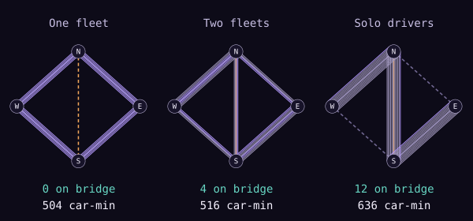

SAME
ROADS
Same roads. Different fleets.
Held fixedTwelve cars · five one-way roads · one open bridge · the travel-time rule on each road.

Read the study
Whose minutes count when a car changes route?
Selected routes
| Route | Path | Cars | Minutes |
|---|
Road laws
Twelve whole cars travel from West (W) to East (E) across five one-way roads that stay fixed across all three cases:
- W → N and S → E depend on traffic: carrying k cars, each takes 2k minutes.
- N → E and W → S are constant: each always takes 30 minutes.
- The central bridge N → S always takes 5 minutes.
Three routes connect W to E: North (W → N → E), South (W → S → E), and Bridge (W → N → S → E, which uses both congestible roads).
Reading the drawing
Each car is one line from W to E, with a bead on the road only its route uses. The number of lines on a road is its load k. Filled round beads belong to the decision-maker whose move is being tested; hollow beads belong to someone else. A solid tag is a change that enters the decision-maker’s sum, and a dashed tag is one that does not.
Equilibrium
Each dispatcher assigns whole cars to minimize the total minutes of the cars they control. A case shows a settled assignment: with every other dispatcher’s assignment held fixed, no dispatcher can reduce their own fleet’s total minutes by reassigning any subset of their cars.
In all three cases, the illustrated single-car move changes the decision-maker’s counted ledger by +1, so it is rejected, even though the effect on all twelve cars runs from +1 to −21.
| Case | N / S / B | Route min | Mean | All 12 |
|---|---|---|---|---|
| One fleet of 12 | 6 / 6 / 0 | 42 / 42 / 29 | 42 min | 504 |
| Two fleets of 6 | 4 / 4 / 4 | 46 / 46 / 37 | 43 min* | 516 |
| Solo drivers | 0 / 0 / 12 | 54 / 54 / 53 | 53 min | 636 |
*In Two fleets, each dispatcher sends 2 cars on each route; actual trips take 37 or 46 minutes.
| Case | Move | Mover | In fleet | Outside | Counted | All 12 |
|---|---|---|---|---|---|---|
| One fleet | N → B | −11 | +12 | 0 | +1 | +1 |
| Two fleets | N → B | −7 | +8 | +8 | +1 | +9 |
| Solo drivers | B → N | +1 | 0 | −22 | +1 | −21 |
Limits of this twelve-car example
The bridge stays open in every case. Changing who dispatches the cars changes which delays each dispatcher counts. It uses whole cars rather than divisible flow, symmetric fleet sizes (1×12, 2×6, 12×1), linear congestion (2k), and one simultaneous departure wave. Real networks have variable demand, staggered departures, asymmetric routes, and incomplete information. Here, the single-car move is an illustration; the equilibrium rule itself checks every multi-car reassignment available to a dispatcher.